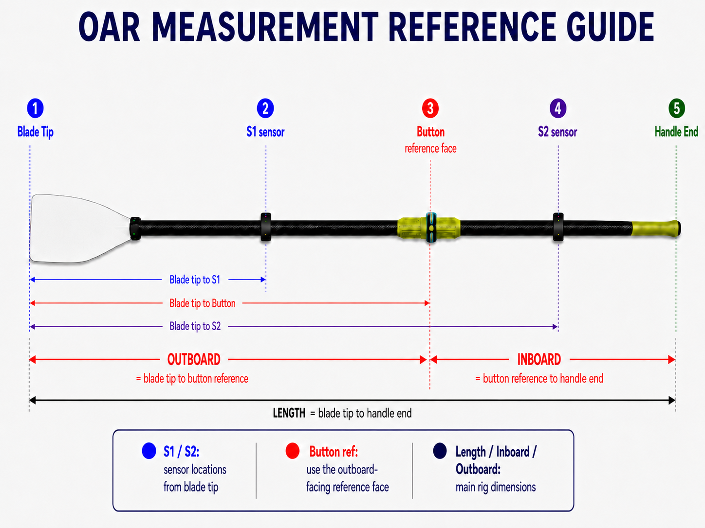

This is the main calibration page most rowers will use. It lets you choose the active oar calibration and edit the geometry used to calculate Scale Factor.

A saved calibration stores the name, rig type, side, S1/S2 sensor positions, inboard, outboard, total length, shaft-profile information, calibration value, and computed Scale Factor. This allows the app to calculate force, work, power, and power split with the correct magnitude for that oar setup.
The photo tool is a convenience for entering geometry. The important part is that all distances use the same reference: the blade tip for S1/S2 and the outboard-facing button reference face for the button/outboard reference.